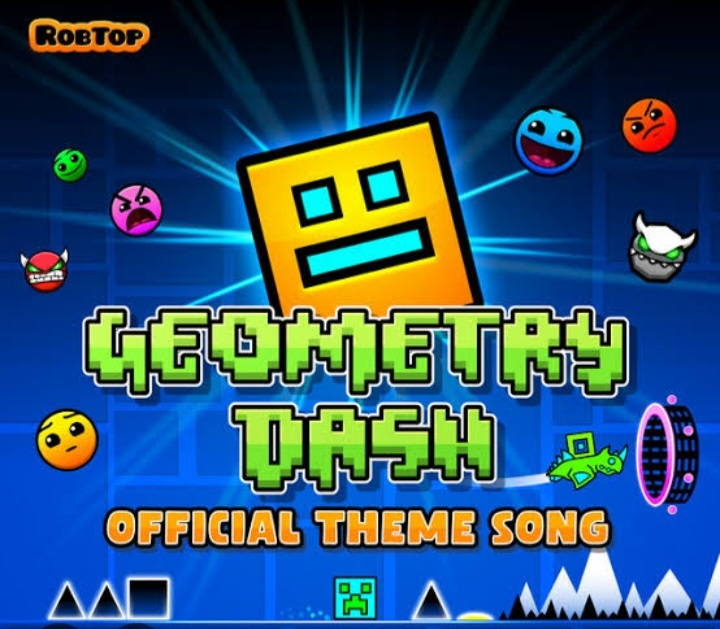
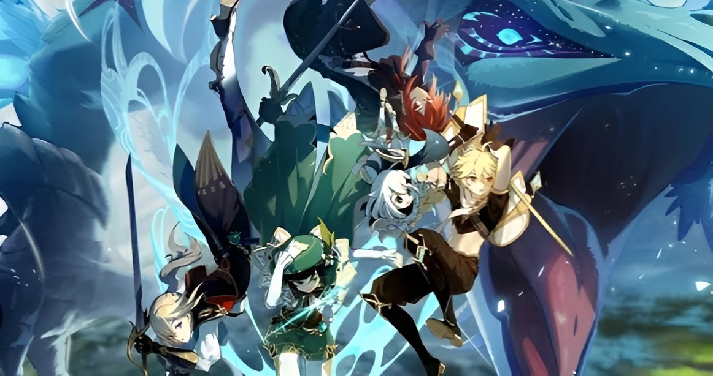

SKIBIDS...
Skibid Toilet é um lixo, que deve ser apagado da existencia. veja o porque, skibid toilet é um desserviço a humanidade.
Skibid toilet é um lixo por completo. Skibid toilet é ruim em ser meme, em ser uma série, em jogos, em tudo que existe, skibid toilet consegue ser péssimo.
Mais motivos para voce odiar skibid toilet.
Skibid toilet é tão Ruim mas tão ruim, que deveria ser proibido de ser assistido.Skibid toilet além de ser péssimo por si só, alem de tudo isto ele é um conteúdo cujo qual "Brain rot" na tradução ficaria mais ou menos como "cérebro podre", conteúdo "brain rot", caso vc não saiba é um tipo de conteúdo sem sentido, e que apodrece o cérebro assim deixando os assistidores com a capacidade intelectual mais baixa.
Operação e o jornal.
Na Rússia ja holve uma operação polícial para investigar skibid toilet, e seus efeitos colaterais.Além disto segundo jornais Indonésios, pais haviam relatado que seus filhos eram viciados em skibid, quase como se fosse uma "sindrome de skibid toilet".
"Eu tenho um amigo que é viciado em
skibid toilet, ele n faz nada além de
ver skibid toilet e jogar skibid
toilet.Ele não estuda, ele não
trabalha, ele é praticamente um zumbi
skibid."disse entrevistado.
Relembrando...
Agr vc percebe os efeitos colaterais de ver skibid toilet?Eu listarei os efeitos colaterais para vc se relembrar: ficar burro, se viciar e virar um zumbi skibid.Esse é o porque vc n deve assistir skibid toilet.

Veja como geometry dash é bom,e como vc deveria jogar.

Veja como o sistema gacha é podre, e deveria ser estinguido do mundo.